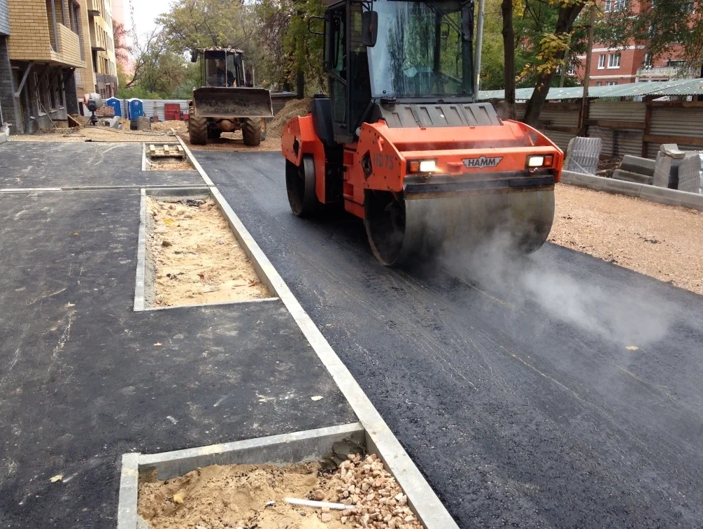

О заводе
Александровский асфальтобетонный завод «Маяк» — крупнейшая районная компания по производству асфальта, асфальтобетонных смесей и щебеночно-мастичных смесей для дорожного строительства. Высокое качество сырья и объемы производственных линий позволили нам заключить партнерские отношения с ведущими строительными фирмами не только Александровского района, но и всей Владимирской области. Для региональных партнеров мы обеспечиваем быструю и своевременную доставку асфальта прямо на объект. Мы строго соблюдаем условия договора, обеспечивая точное количество по смете согласно графику строительства клиента. Цена на асфальт, бетонные смеси и другие нерудные материалы АБЗ «Маяк» неоднократно отмечалась в регионе как наиболее приемлемая для потенциальных заказчиков. Все материалы проходит обязательную сертификацию и аттестацию в независимой лаборатории.
Причины купить асфальт у АБЗ «Маяк»:
- Минимальные сроки поставки
- Высокая квалификация специалистов
- Современные производственные линии
- Сертифицированное качество асфальтобетонных смесей
- Строительство автомобильных дорог и другие услуги с гарантией
- Индивидуальная система скидок для партнеров и низкие цены на асфальт

Почему выбирают нас
Александровский асфальтобетонный завод «Маяк» предоставляет несколько вариантов выгодной покупки асфальта и асфальтобетонных смесей. Являясь производителем, мы имеем возможность устанавливать персональные цены для каждого клиента. Если вы хотите купить асфальт и у вас уже есть предложение от другой компании, мы дадим вам хорошую скидку к текущей смете. Для постоянных клиентов у нас всегда предусмотрена персональная скидка, как благодарность за долгосрочное сотрудничество. Укладка асфальта, дорожно-ремонтные работы и другие услуги тоже могут быть со скидкой при условии полной предоплаты. В АБЗ «Маяк» созданы программы работы с клиентами разного статуса. Гибкая система скидок распространяется на покупку материалов в любом объеме. Поэтому купить асфальт выгодно не только крупным компаниям, но и небольшим фирмам. Искренне надеемся, что в лице нашей компании вы найдете надежного поставщика и постоянного партнера для вашего бизнеса.
Высокая точность
Экологичность
Индивидуальный подход
Статистика производства

250 000 т
Асфальта выпущено за 2024 год

1 200+
Доставок по району и области

15 лет
Опыт работы на рынке